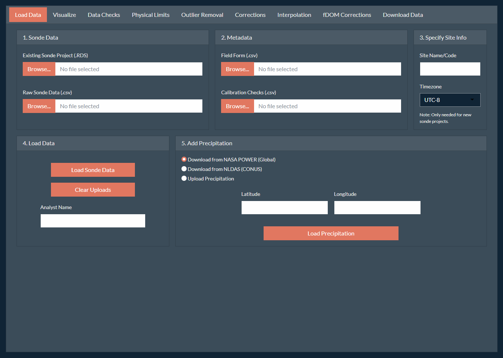
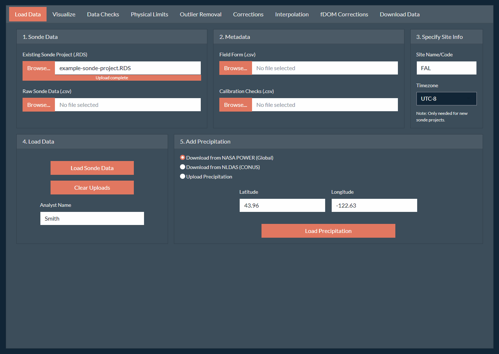

Overview
Correction of continuous water quality records can be a complicated task as the data can span a large time range and can include several parameters which may require different types of corrections and checks. Additionally, some corrections (i.e., turbidity) may effect other parameters (i.e., fDOM).
We suggest using the following workflow as the default process for
correcting a complete water quality record of stream water quality using
the SondePolishR app. You may wish to modify for your own
specific workflows and needs.
TODO: include a workflow diagram here.
Throughout this tutorial we will refer to tabs and panels.
- Tabs are the different pages within the app that can be accessed using the names on the top of the app (i.e., Load Data, Visualize, Data Checks)
- Panels are the hideable sections with the sidebar on the left (i.e., Select Parameters, Save Edits, Date Ranges, Plotting Options).
Step 1: Open the App
-
Install the
SondePolishRpackage.pak::pak("wildfire-water-security/WWS-Node1-SondePolishR-sonde-qaqc") -
Run the follow code to open the app:
Step 2: Load Data
-
Specify data file locations. Upon loading the app, you should be on the Load Data tab. On the first card (1. Sonde Data), use the Browse button to navigate to the data file(s) you want to load. This step does not load the data. It simply tells the app were the data you want to load is located.
Specifically, this step will copy your selected files to temporary folder which is where the app loads the files from, so no changes will be made to your original data files.
If you have an existing project saved from previously using the app you can load this using the Existing Sonde Project option.
Otherwise, load one or more
.csvfiles using the Raw Sonde Data option.If you would like to add new raw files to an existing project, you may select both a project and a raw file. They will be merged together upon load.
-
Specify metadata file locations. Similar to locating your data files, you can select metadata files to add to your project. These include:
A field form (
help(example_fieldform)) which describes information from field visits and is used to calculate out of water periods.A calibration check file (
help(example_calcheck)) which contains data from field calibration checks used to make drift corrections.
Both files are optional but some app options will not work without them (e.g., viewing or removing out of water periods, better automated guesses for drift corrections).
-
Specify site code and site timezone.
Specify a site code or name which will be used for default file names and included in any data exports.
Select the appropriate timezone for your dataset. It is assumed that all files (raw data and metadata) use this same timezone.
If you’re loading a project and have previously specified this info you do not need to re-add it, this info gets saved within the sonde project and will be loaded with the rest of the data.
-
Load the data. Use the Load Data section to load your selected data by clicking the Load Sonde Data button.
- The loaded files will remain unless a new file is uploaded. If you’re switching to a new site or data project, it’s recommended to clear your file uploads first using the Clear Uploads button which will clear all the file locations.
-
Load Precipitation Data. Precipitation data can be extremely helpful in making decisions about data corrections as it can help determine if observed spikes could have been caused by increased flows. There are currently three options for adding precipitation data to the project:
NASA Merra-2 (POWER): This dataset is available across a global scale at a resolution of 0.5 x 0.625 degrees available from 1981 to near real time at an hourly scale. Due to it’s global coverage, it may not capture small or localized events as well.
-
NASA NLDAS: This dataset is available across CONUS at a resolution of 0.125 × 0.125 degrees available from 1981 to near real time at an hourly scale. This data requires a token to access the data. See NASA Earthdata for directions on creating a token. Note that this token should be kept secret.
The API for this product can also be unreliable, it make take a bit to load and you may need to try more than once.
User uploaded precipitation: You can also upload a custom precipitation file. See
help(example_precip)for details on the structure of this file.
If you choose to download precipitation data, input your site latitude and longitude, enter your earth data token (if applicable) and click Load Precipitation. This will download hourly precipitation data at the specified point over the date range of your data.

Step 3: Save Initial Project
While every effort has been made to prevent the app from crashing. It’s a new app still under development and bugs can occur. It’s recommend to save your project frequently to prevent loss of work. To save your project:
Navigate to the Download Data tab on the far right.
-
Locate the Save Sonde Project section in the bottom right. Similar to uploading your data, use the Choose Location button to select where you want to save your project to and what name to use for your project. You can use the selector in the top to change your root directory. Click Save to confirm the save location.
Important: Your project is not saved at this point! You must also click the Export Project button to save the project to your specified file.
Click Export Project to save your project to the specified file.

Step 4: Initial Data Checks
After creating your project (or adding data to an existing project), it’s helpful to get a sense of what the data looks like before performing corrections.
Navigate to the Visualize tab. This tab used to provide summary data, access to metadata tables, undo edits, and visualize the data.
-
Remove known out of water periods. Out of water periods are times the sonde has been removed from the stream to download data or perform maintenance. We want to remove the regions as we know that those measurements will not be representative of the stream conditions.
If you have included field form metadata, you can visualize periods when the sonde was out of the water by going to Plotting Options and Show out-of-water periods. This will display the periods as red boxes on the plot.
-
To remove data from the highlighted periods, click the Flag OOW Periods button. This will remove measurements across all parameters during those periods.
Note: The measurement taken right before and after the sonde was removed from the water is also removed to prevent issues with time difference between the recorded time and the sonde time and short equilibrium periods. If no times are specified in the field form, the OOW period will default to the entire day of the field form.
-
Check for data duplicates. While not the most common, duplicates in the data record can occur. This is typically due to:
Sonde replacement when the deployment isn’t immediately stopped on the old sonde.
Instrument malfunction.
You can identify duplicate records using the Data Checks tab. Any identified duplicates will be show as a table which describes the type of duplicate and the length. To address a duplicate click on a row of the table.
A plot showing the duplicated region will be displayed. You can choose to keep a specific set, average the duplicated region, or remove both sets. Add an optional note about why you chose the method you did, and click Resolve Duplicate.
Repeat these steps to resolve all duplicated regions of the data.
-
Document data gaps. Gaps in the data record are much more common and may be due to instrument maintenance, dead batteries, or instrument malfunction. Visualize any data gaps by selecting the Gaps table under Table Options.
- You can add a user note describing the reason for the data gap (if known), by double clicking the appropriate row under User Notes. This note will be saved in the metadata of the project and can be exported.
It may be helpful to examine the field notes while documenting data gaps. To view the field notes, go to the Visualize tab, and select Field Form under Table Options.
Briefly view all parameters. Before starting to correct data, it is often useful to briefly examine the data records to get a feel for your data. You can do this from the Visualize tab using the Select Parameters section to view each parameter.
Save the project. Navigate back to the Download Data tab and click the Export Project button to save a new copy of your project. When prompted if you want to overwrite your project you can safely overwrite it unless you want to keep a unedited copy of your project.
Step 5: Correct Turbidity
Turbidity is often one of the most challenging records to correct. Turbidity signals can reach very high peaks in a short time period. However, since it’s an optical sensor, peaks can also be due to optical interference (e.g., a leaf near the sensor). A critical part of the cleaning process for turbidity is to remove these “bad” spikes caused by interference while not removing real spikes in turbidity.
Step 5.1 Remove any data outside of the sensor’s physical limits.
Navigate to the Physical Limits tab and select Turbidity under Select Parameters. This will display the data with the default range of the sensor (uses YSI EXO probe limits), with any data outside this range shown in red.
Particularly in very clean streams, turbidity may dip below 0 NTU, meaning the stream water is cleaner than the water used to calibrate the sonde. In these cases you likely want to set the minimum limit to slightly below 0 to avoid removing this data.
If there are any points outside of the physical limits you wish to remove, use the Save Edits panel to edit the data. A default note will indicate the limits used to remove data, but you may also add additional information. Click Remove Points to save the change.
Step 5.2 Apply quality flags to data.
We will apply flags to points within the turbidity record marking them as questionable or bad. These flags will be exported with the final data and can be used to remove points from the record.
-
Adjust the plot to better visualize turbidity data.
Use the Date Ranges panel to set a period length of 15 days and use the slider to view data by period.
-
Adjust the max y-value to the left of the plot to the range of your data. It defaults to the maximum value across the entire dataset, which is likely to be high due to turbidity peaks.
Do not set the max y-value to lower than around 5-10 NTU to avoid zooming in too much on very small shifts in turbidity.
If you loaded precipitation data or have depth data. Add that to the plot as a second y-axis using the Select Parameters panel. This information is extremely helpful when trying to determine real peaks from spurious ones.
-
Decide if a point/region should be marked as bad or questionable. Within the first period, use the zoom function to more closely examine any regions that look either bad or questionable.
A bad point for turbidity is typically a peak that does not have a falling limb, particularly when not associated with precipitation or a change in depth.
-
A questionable point is one where the falling limb is inconclusive, the data is messy but associated with precipitation or a depth change, or a peak looks bad, but the change is small (< 1 NTU). Use the following decision tree to determine the correct flag for a point or set of points:
[decision tree here for determining how to mark it]
-
Apply a quality flag to a set of points.
-
To mark a point select the appropriate flag under the Apply Quality Flags panel and switch to either the Box Select or Lasso Select tools in the upper right corner of the plot to select the point.
Within the period, you may switch between marking points as bad and questionable but you must save each set separately.
Once you’ve selected the points for a region, go to the Save Edits panel, enter an optional note, and click Flag Points to save the flag to the selected points. The color of the points should change and no longer show (unsaved) in the legend.
-
-
Repeat steps 2-3 for all data periods. Use the Next Period button under the plot to move through the data record, applying quality flags.
- You may need to adjust the max y-value as you move through the data. If you clear this value it will auto-scale the data which can be helpful for viewing high peaks.
Step 5.3 Remove Bad Points.
Navigate to the Outlier Removal tab.
On the Date Ranges panel, unselect View data by period.
Remove any points marked as bad by selecting Bad Points as the outlier detection method under the Identify Outliers panel.
Remove the points using the Save Edits panel, clicking the Remove Points button. This will make all turbidity values marked as bad as
NA.
Step 5.4 Interpolate Missing Points.
Removing errant points will result in gaps within the data record for turbidity. We can attempt to fill in these gaps using interpolation.
Navigate to the Interpolation page.
Select your interpolation method. For turbidity it’s recommended to use the Linear method which will use linear interpolation methods.
Adjust the maximum fill window. The default is to only fill gaps less than 8 hours. This default is likely fine for most systems. However, if you would like to be more conservative you can decrease this value. All interpolated points will be flagged in the exported data.
Confirm the interpolation changes using the Save Edits panel, clicking the Fill Points button. This will add the green points in the plot to the dataset for turbidity.
Step 5.5 Apply Additional Corrections.
While the major issue with turbidity tends to be errant peaks, occasionally there are other issues that need to be dealt with. These can be performed using the Corrections tab.
-
Additive: Used to apply a linear or absolute shift to a set of selected data. For turbidity this can be used to adjust a baseline that is below 0. To apply this kind of correction, ensure you’re on the Additive option within the Corrections panel.
Use one of the selection tools to select the point or set of points you want to apply a shift correction to.
The app will guess at the shift value to apply, and show the shifted points in red.
Adjust the slope and intercept values in the Corrections panel until you’re happy with the shift.
Save the change using the Save Edits panel by clicking the Update Points button.
-
Drift: Used to apply a linear shift to an entire data file. This is sometimes needed when a sensor is swapped out and the data has a large jump due to drift in the calibration. To apply this kind of correction, ensure you’re on the Drift option within the Corrections panel.
In the Corrections panel, select the file you want to apply the correction to.
-
The app will guess at the amount of drift correction to apply.
If calibration check metadata is included in the project, it will use those values.
If there is no calibration check data available it will use the difference between the last point of the file and the first point of the next file.
Adjust the uncorrected and corrected values in the Corrections panel until you’re happy with the shift.
Save the change using the Save Edits panel by clicking the Update Points button.
-
Smoothing: Used to smooth out a segment of messy data due to optical interference. To apply this kind of correction, ensure you’re on the Smoothing option within the Corrections panel.
Use one of the selection tools to select the region you want to apply a smoothing correction to. The smoothed points will show on the plot as red points and line.
You can adjust the smoothing method and smoothing factor in the Corrections panel.
Save the change using the Save Edits panel by clicking the Update Points button.
Note: This will essentially “rewrite” whole sections of data, and therefore should be used carefully and sparingly to preserve trends that would otherwise have to be removed.
Step 5.6 Save Project.
- Save the project. Navigate back to the Download Data tab and click the Export Project button to save the edits to your project. When prompted if you want to overwrite your project you can safely overwrite it unless you want to keep a copy of your project prior to the turbidity edits.
Step 6: Correct Temperature
While turbidity can be very challenging to correct, temperature is one of the easiest records to correct. Since it’s not an optical sensor, it tends to experience less errant peaks and the records itself tends to be slow, smooth changes over time.
Step 6.1 Remove any data outside of the sensor’s physical limits.
Navigate to the Physical Limits tab and select Temperature under Select Parameters. This will display the data with the default range of the sensor (uses YSI EXO probe limits), with any data outside this range shown in red.
If there are any points outside of the physical limits you wish to remove, use the Save Edits panel to edit the data. A default note will indicate the limits used to remove data, but you may also add additional information. Click Remove Points to save the change.
Step 5.2 Apply quality flags to data.
We will apply flags to points within the temperature record marking them as questionable or bad. These flags will be exported with the final data and can be used to remove points from the record.
-
Adjust the plot to better visualize temperature data.
Use the Date Ranges panel to set a period length of 30 days and use the slider to view data by period. We want to use a larger period length here as this data tends to be smoother.
-
Adjust the max y-value to the left of the plot to the range of your data. It defaults to the maximum value across the entire dataset, which is likely to be high due to turbidity peaks.
Do not set the max y-value to lower than around 5-10 NTU to avoid zooming in too much on very small shifts in turbidity.
If you loaded precipitation data or have depth data. Add that to the plot as a second y-axis using the Select Parameters panel. This information is extremely helpful when trying to determine real peaks from spurious ones.
-
Decide if a point/region should be marked as bad or questionable. Within the first period, use the zoom function to more closely examine any regions that look either bad or questionable.
A bad point for turbidity is typically a peak that does not have a falling limb, particularly when not associated with precipitation or a change in depth.
-
A questionable point is one where the falling limb is inconclusive, the data is messy but associated with precipitation or a depth change, or a peak looks bad, but the change is small (< 1 NTU). Use the following decision tree to determine the correct flag for a point or set of points:
[decision tree here for determining how to mark it]
-
Apply a quality flag to a set of points.
-
To mark a point select the appropriate flag under the Apply Quality Flags panel and switch to either the Box Select or Lasso Select tools in the upper right corner of the plot to select the point.
Within the period, you may switch between marking points as bad and questionable but you must save each set separately.
Once you’ve selected the points for a region, go to the Save Edits panel, enter an optional note, and click Flag Points to save the flag to the selected points. The color of the points should change and no longer show (unsaved) in the legend.
-
-
Repeat steps 2-3 for all data periods. Use the Next Period button under the plot to move through the data record, applying quality flags.
- You may need to adjust the max y-value as you move through the data. If you clear this value it will auto-scale the data which can be helpful for viewing high peaks.
Step 5.3 Remove Bad Points.
Navigate to the Outlier Removal tab.
On the Date Ranges panel, unselect View data by period.
Remove any points marked as bad by selecting Bad Points as the outlier detection method under the Identify Outliers panel.
Remove the points using the Save Edits panel, clicking the Remove Points button. This will make all turbidity values marked as bad as
NA.
Step 5.4 Interpolate Missing Points.
Removing errant points will result in gaps within the data record for turbidity. We can attempt to fill in these gaps using interpolation.
Navigate to the Interpolation page.
Select your interpolation method. For turbidity it’s recommended to use the Linear method which will use linear interpolation methods.
Adjust the maximum fill window. The default is to only fill gaps less than 8 hours. This default is likely fine for most systems. However, if you would like to be more conservative you can decrease this value. All interpolated points will be flagged in the exported data.
Confirm the interpolation changes using the Save Edits panel, clicking the Fill Points button. This will add the green points in the plot to the dataset for turbidity.
Step 5.5 Apply Additional Corrections.
While the major issue with turbidity tends to be errant peaks, occasionally there are other issues that need to be dealt with. These can be performed using the Corrections tab.
-
Additive: Used to apply a linear or absolute shift to a set of selected data. For turbidity this can be used to adjust a baseline that is below 0. To apply this kind of correction, ensure you’re on the Additive option within the Corrections panel.
Use one of the selection tools to select the point or set of points you want to apply a shift correction to.
The app will guess at the shift value to apply, and show the shifted points in red.
Adjust the slope and intercept values in the Corrections panel until you’re happy with the shift.
Save the change using the Save Edits panel by clicking the Update Points button.
-
Drift: Used to apply a linear shift to an entire data file. This is sometimes needed when a sensor is swapped out and the data has a large jump due to drift in the calibration. To apply this kind of correction, ensure you’re on the Drift option within the Corrections panel.
In the Corrections panel, select the file you want to apply the correction to.
-
The app will guess at the amount of drift correction to apply.
If calibration check metadata is included in the project, it will use those values.
If there is no calibration check data available it will use the difference between the last point of the file and the first point of the next file.
Adjust the uncorrected and corrected values in the Corrections panel until you’re happy with the shift.
Save the change using the Save Edits panel by clicking the Update Points button.
-
Smoothing: Used to smooth out a segment of messy data due to optical interference. To apply this kind of correction, ensure you’re on the Smoothing option within the Corrections panel.
Use one of the selection tools to select the region you want to apply a smoothing correction to. The smoothed points will show on the plot as red points and line.
You can adjust the smoothing method and smoothing factor in the Corrections panel.
Save the change using the Save Edits panel by clicking the Update Points button.
Note: This will essentially “rewrite” whole sections of data, and therefore should be used carefully and sparingly to preserve trends that would otherwise have to be removed.
Step 5.6 Save Project.
- Save the project. Navigate back to the Download Data tab and click the Export Project button to save the edits to your project. When prompted if you want to overwrite your project you can safely overwrite it unless you want to keep a copy of your project prior to the turbidity edits.
Look out for unnatural rises.
Use a larger period to see the overall pattern.
Could be a drift correction if SC sensor changes.
view with DO
remove bad points
interpolate
corrections for any drift
save project
Step 7: Correct Dissolved Oxygen
Should also be pretty clean, similar to temperature we shouldn’t expect a lot of big drops.
Probably won’t see a lot of the bad spikes downwards.
Spikes straying from the normal trend ~0.5 mg/L?? And above remove, otherwise just leave.
Could also just look with the default values to see the diurnal patterns.
remove bad points
interpolate
corrections for any drift
save project
Step 8: Correct pH
- There shouldn’t be a lot of spikes, but they do drift and go bad.
- Shouldn’t need a lot of adjustments. Any short-term spikes (likely downward) are likely bad.
- Strange drops that aren’t bad, mark the drop points as questionable -> 11 not enough evidence to do anything with it.
Only flag things outside of the normal random variability.
remove bad points
interpolate
corrections for any drift
save project
Step 9: Specific Conductivity
- View first the whole period to see what it looks like.
- After viewing use 10 day periods to visualize.
- Set max to ~80??
- Looking for drift or spots where it’s shifted down.
View with precip
Apply shift corrections when there’s dips using the corrections -> additive tool. Called drop outs??
Downward spikes -> bad, should be smooth like temperature or associated with a lot of rain.
Could use the default scale per period.
Leave anything less than ~0.5-2 uS/cm -> (check vals) leave alone can change quickly.
If you want to remove something because it looks bad, but you’re not sure if you should, mark it as questionable (applies to everything). -> 10
remove bad points
interpolate
corrections for any drift
save project
Step 10: fDOM
- Correct turbidity before fDOM because then you can use the cleaned turbidity record to figure out what to remove in the fDOM. Make sure to remove bad points before correcting fDOM to remove bad turbidity spikes.
- When correcting give spikes to leeway, leave things alone that are 3-4 QSU. Sensor is messy.
- Plot 12 downward spike also see in turbidity
- Baseline fDOM don’t go lower than 15-20 QSU (depending on the steam).
- But downward spikes could be due to differences in turbidity, looking for mirror/flipped turb record, it should have starting limb that decreases
- For downward spikes like bubbles (plot 13) could use the rolling median to smooth out the bad spikes.
remove bad points
interpolate
corrections for any drift
fDOM corrections
save project